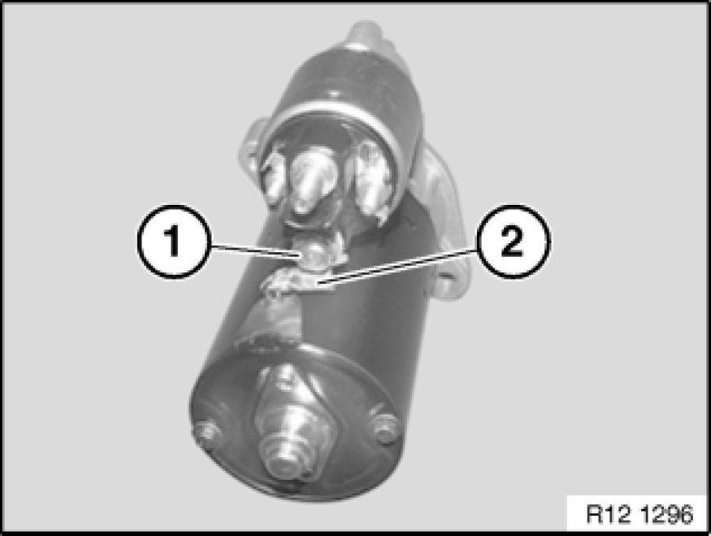
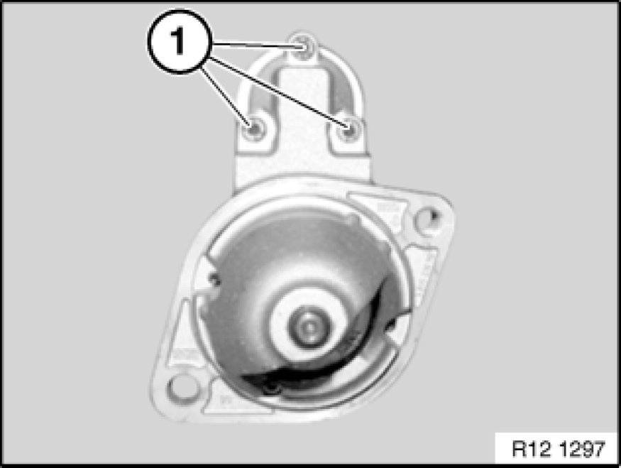
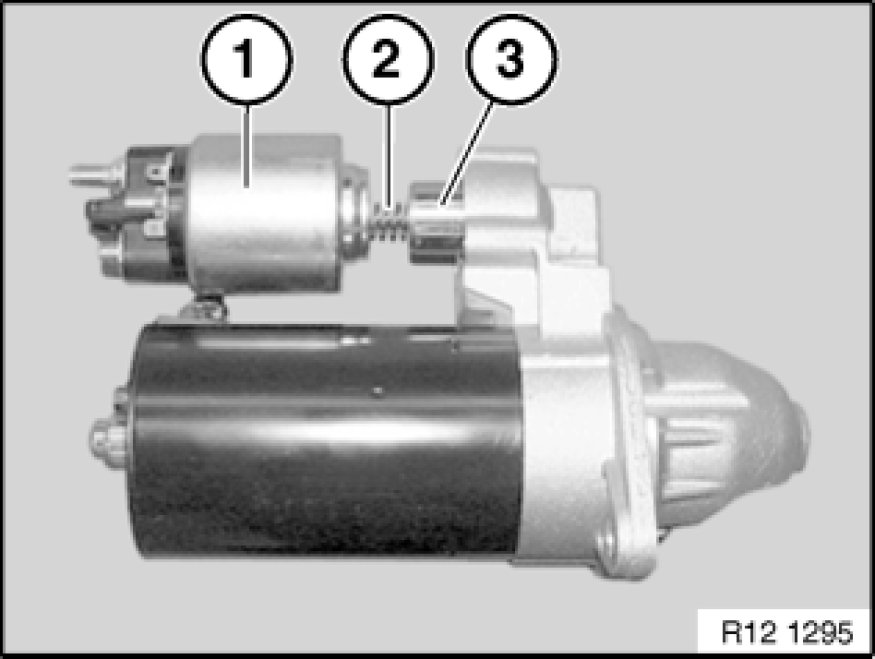

Starter Solenoid: Service and Repair
12 41 041 - Replacing solenoid switch
Turn off ignition.
Remove starter motor.

Release nut (1).
Remove cable lug (2).
Caution!
Do not turn cable lug (2) while tightening down - risk of short circuit to starter motor housing.
Tightening torque, 12 41 4AZ.

Release screws (1).

Remove solenoid switch (1) and spring (2).
Unhook pin (3).
Installation Note:
Check pin (3) for wear and apply grease.